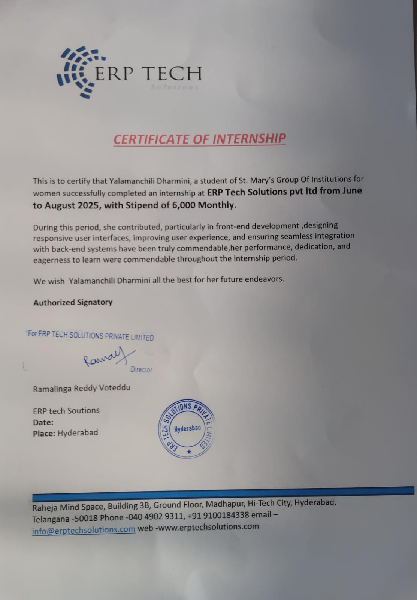
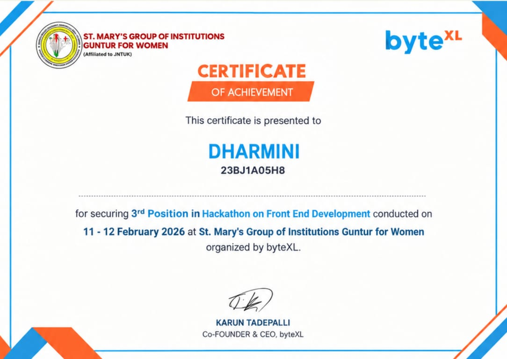
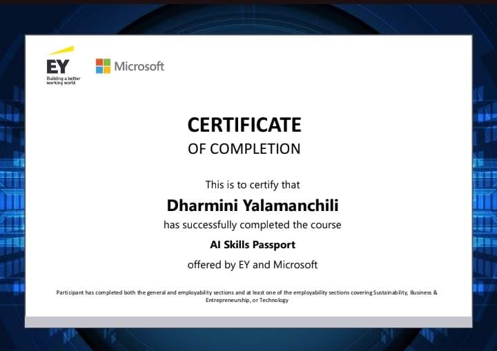
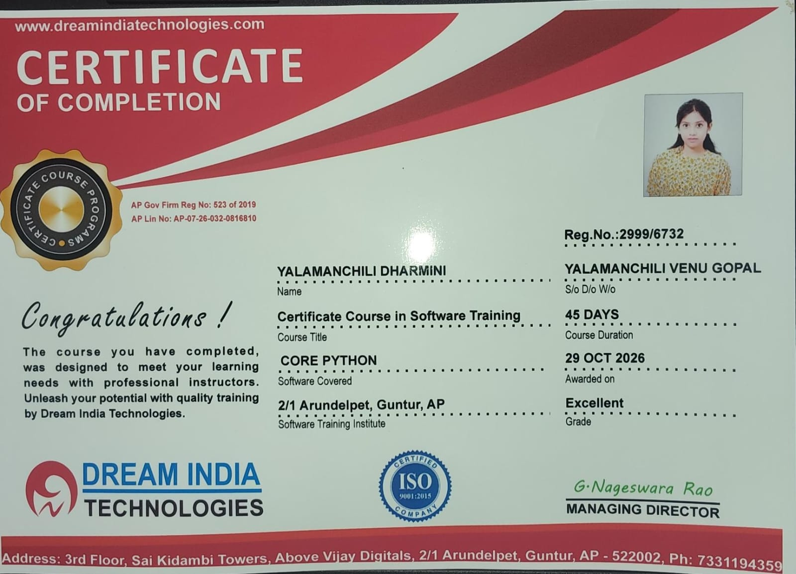
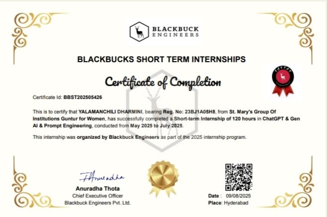
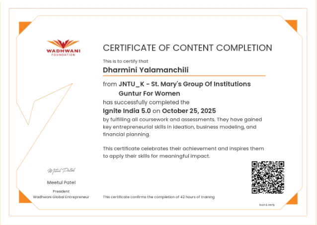

Programming
- Python
- JavaScript
COMPUTER SCIENCE & ENGINEERING · CLASS OF 2027
I’m Y. Dharmini, a Computer Science undergraduate with hands-on experience in software testing and front-end development. I enjoy making web applications more reliable, usable, and thoughtfully built.
01 / ABOUT
Computer Science and Engineering undergraduate graduating in 2027, with practical experience across software quality assurance and web development.
Experienced in manual testing, test execution, defect identification and documentation, retesting, and web application validation. Also builds responsive, interactive interfaces with Python, JavaScript, HTML5, CSS3, and Bootstrap. Interested in contributing to dependable products through careful testing, clear communication, and user-focused development.
02 / CAPABILITIES
Practical skills developed through coursework, internships, and projects.
03 / EXPERIENCE
Internship experience in quality assurance and front-end development.
Kr4all Digital Health Services
Resume-reported outcomes: 12+ bugs documented and a 15% product quality improvement.
ERP Tech Solutions
Resume-reported outcome: UX enhancements contributed to an estimated 25% reduction in bounce rate.
04 / SELECTED WORK
Hands-on work in career support, personal finance, and collaborative workflows.
AI-powered career assistance application supporting resume-to-job matching and internship tracking. Collaboratively developed with Kolluru Bhuvaneswari.
Client-side finance tool that accepts spending by category and turns it into interactive percentage-based visualizations.
Web-based project management prototype with responsive dashboards, task assignment modules, and interactive workflows.
05 / EDUCATION
St. Mary’s Group of Institutions, Guntur for Women
Jawaharlal Nehru Technological University, Kakinada (JNTUK)
06 / CREDENTIALS
Selected certificates and achievements. Open an image to view it larger.

Certificate of InternshipERP Tech Solutions · Jun–Aug 2025Open certificate ↗
3rd Place, Front-End Development HackathonbyteXL · February 2026Open certificate ↗
AI Skills PassportEY & MicrosoftOpen certificate ↗
Core Python — 45-Day Software TrainingDream India Technologies · October 2026Open certificate ↗
Generative AI & Prompt Engineering InternshipBlackbuck Engineers · 2025Open certificate ↗
Ignite India 5.0Wadhwani Foundation · October 2025Open certificate ↗ HACK WITH INDIA × DEVNOVATECERTIFICATEThe portfolio includes the certificate images and PDFs provided. Another resume-listed credential is Wadhwani Foundation content completion.
07 / GET IN TOUCH
Interested in software testing, quality assurance, or front-end development opportunities? I’d be glad to connect.